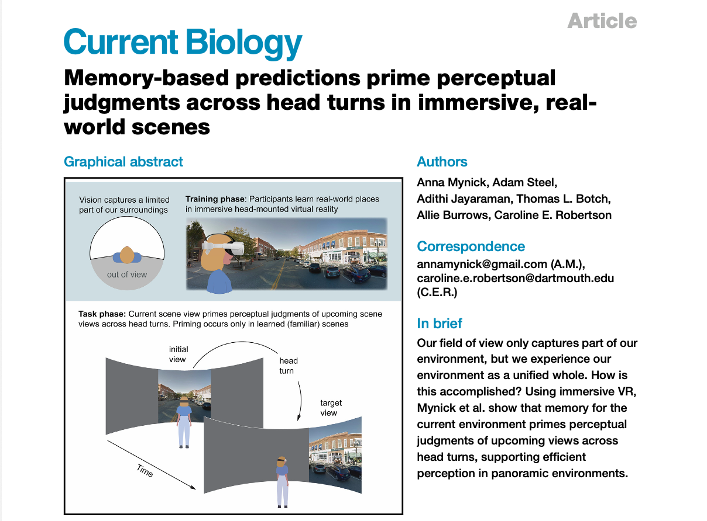
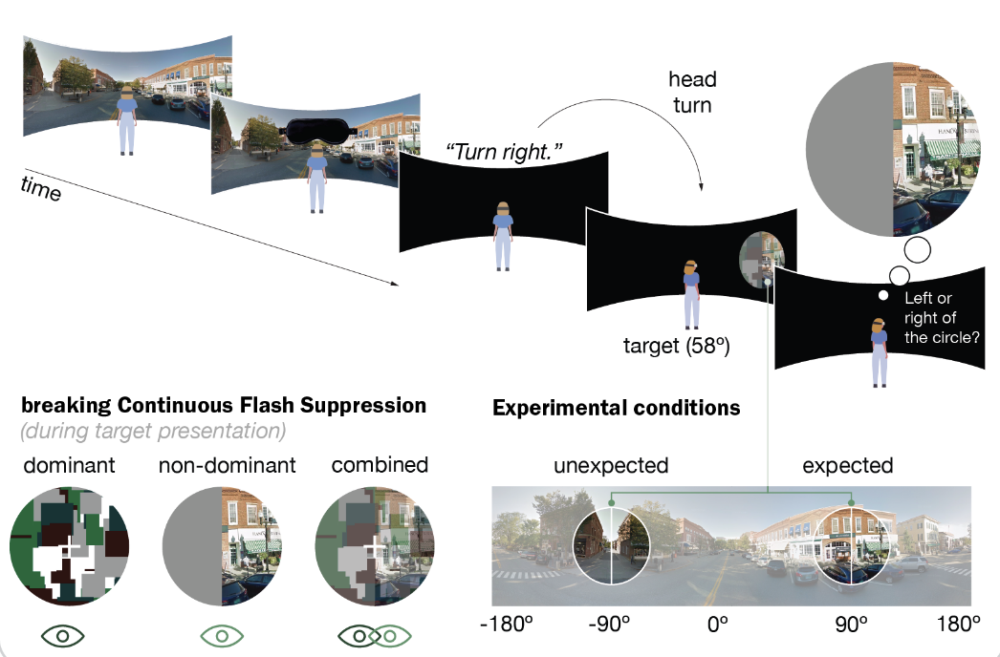

Research
Every day, we navigate the world despite a big limitation: we can't see our full surroundings at once. My current research investigates how we leverage our memory for a place to overcome this limitation and interact effectively in 360° environments.

Is memory for a place is used to predict upcoming scene views as we turn our heads in space?
Read the full paper here.

(Ongoing work)
Does memory for a place impact how quickly views from that place enter perceptual awareness?
Read a conference abstract here.